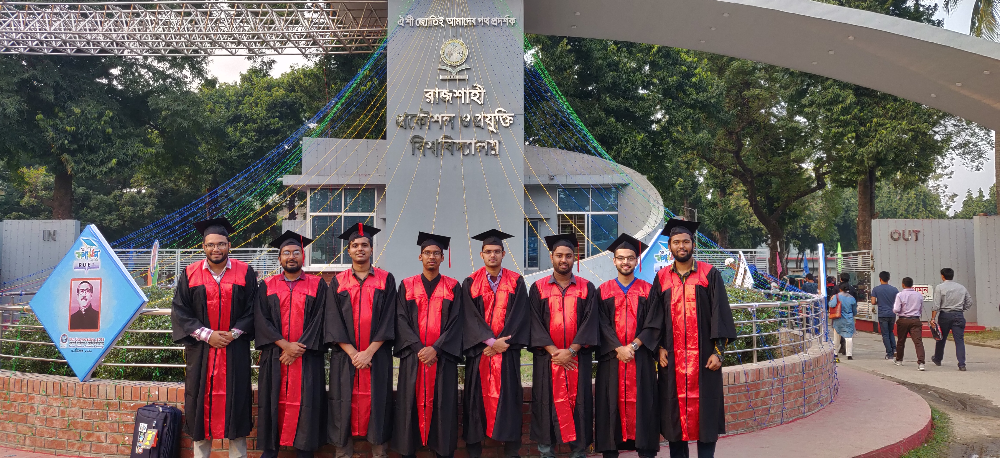
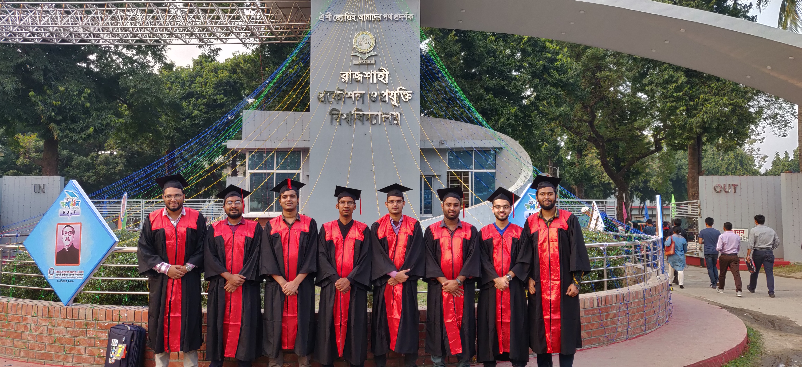

Rajshahi University of Engineering and Technology (RUET)
Bachelor of Science in Electrical and Electronic Engineering (EEE)
Completed a four year long bachelor program in Electrical and Electronc Engineering with Power Systems major. The completion of the course cost me a lot of sweats and sleepless nights. It gave me stress that I could barely endure. The program was divided in eight semesters and each semester had five theory courses and necessary lab works related to them. During the eight semesters, I have learnt the courses that are related not only to EEE, but the courses from CSE, ME, IPE, Maths, Physics, Chemistry, Economics and Accountng to test our patience. Glad that I overcame all of them.
Some key points that are worth mentioning:
- Completed my B.Sc. securing CGPA 3.62 in a scale of 4.00.
- Obtained a total of 160 credits.
- Was a member of IEEE RUET student branch for more than two years.
Some wonderful snaps from my graduation ceremony.
 

BCSS Government College
Higher Secondary Certificate (HSC) in Science
A two year long program that ends with a public exam called Higher Secondary Certificate (HSC) exam. It laid the foundation of my interest in science and math. These two years ended pretty well. I learnt the art of self-learning during this period.
In the HSC exam, I secured GPA 5.00 in a scale of 5.00 with the highest grade in all subjects.
Khubjipur ML High School
Secondary School Certificate (SSC) in Science
Life was here. Best days of my life. Period.
Studied class six to ten here. The final exam of class ten was a public exam called Secondary School Certificate (SSC) exam. There was a scholarship exam after the end of class eight where I achieved scholarship in talentpool. Life was simple, dreams were just formulating. I could be anything I want back then, the dreams were so colorful, unlike now. Miss the time spent with my friends, miss the evening spent in the local library. It was the time that inspired my habit of reading. It was the time that shaped me who I am today. Grateful for the time here, grateful to this wonderful school.
In the SSC exam, I secured GPA 5.00 in a scale of 5.00 with the highest grade in all subjects.
- © Jakir Hasan
- Design: Jakir Hasan